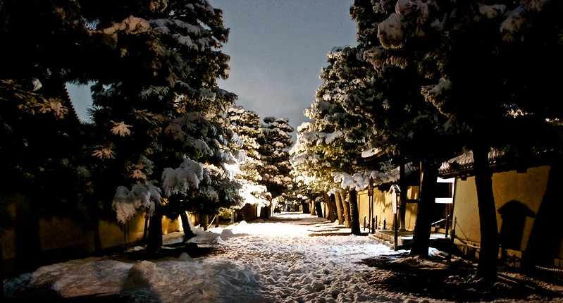

My First Snow in Kyoto
[Click the image to view on Google Maps]

The long walkways in Daiokuji Temple were completely silent, so much so you could hear the snow fall on the ground.
Next Page
Previous Page
RETURN